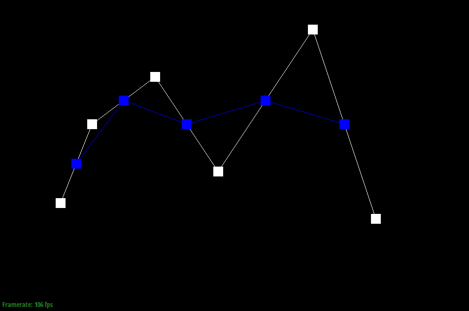
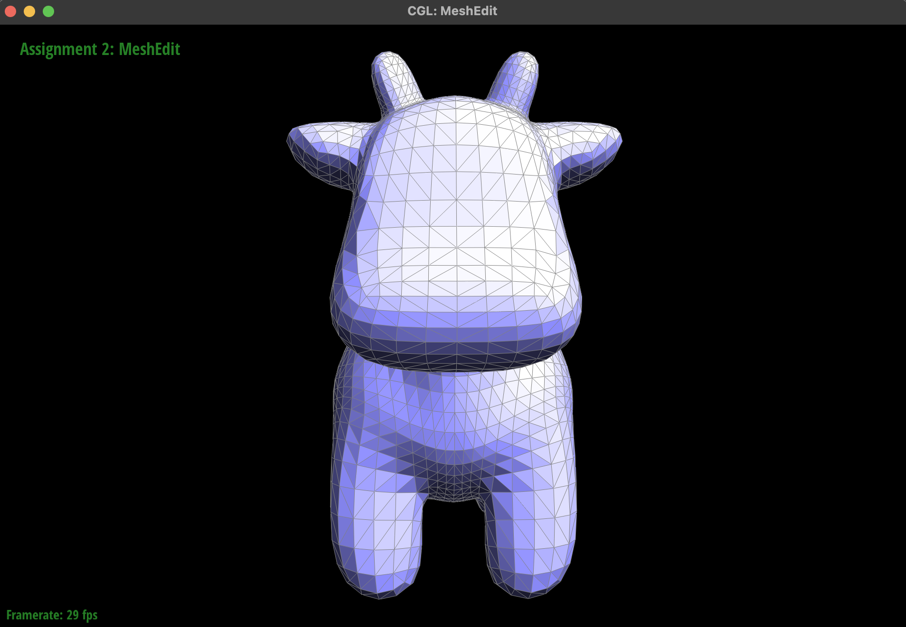
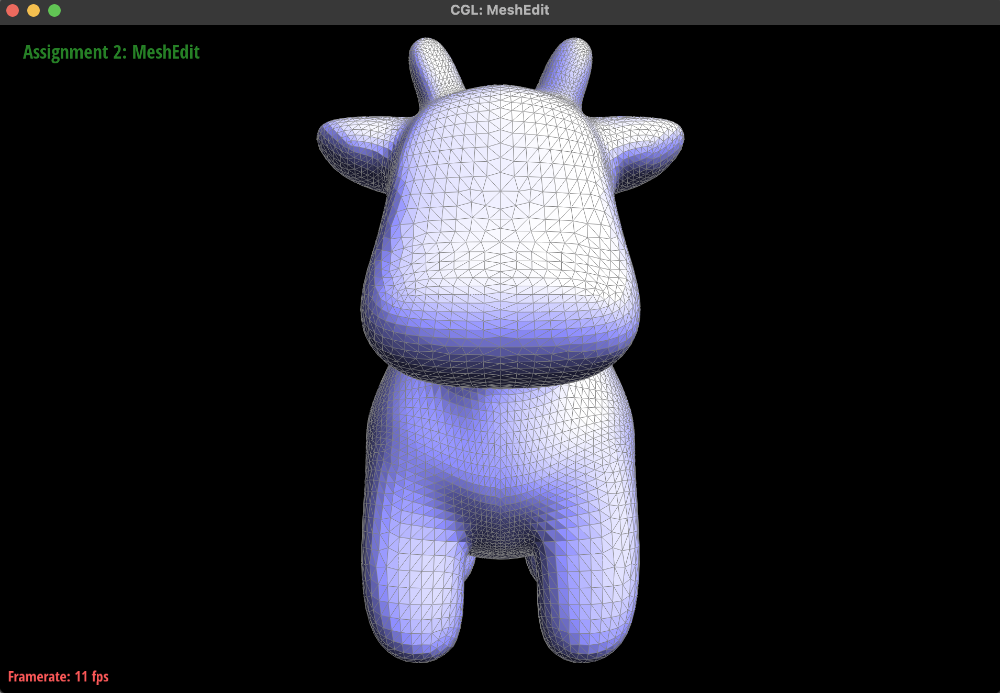
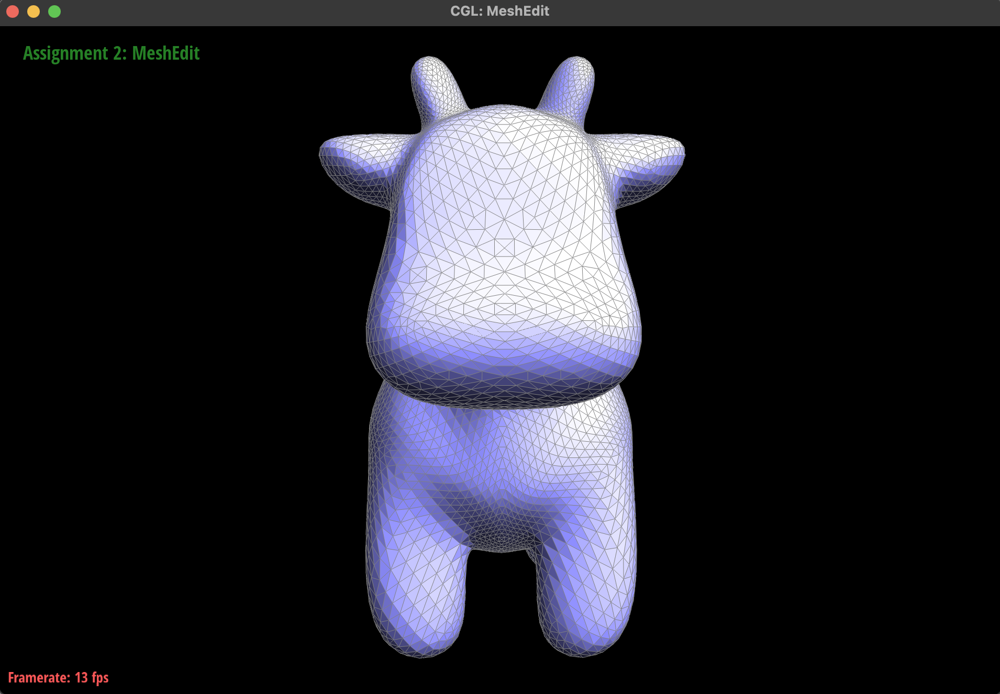
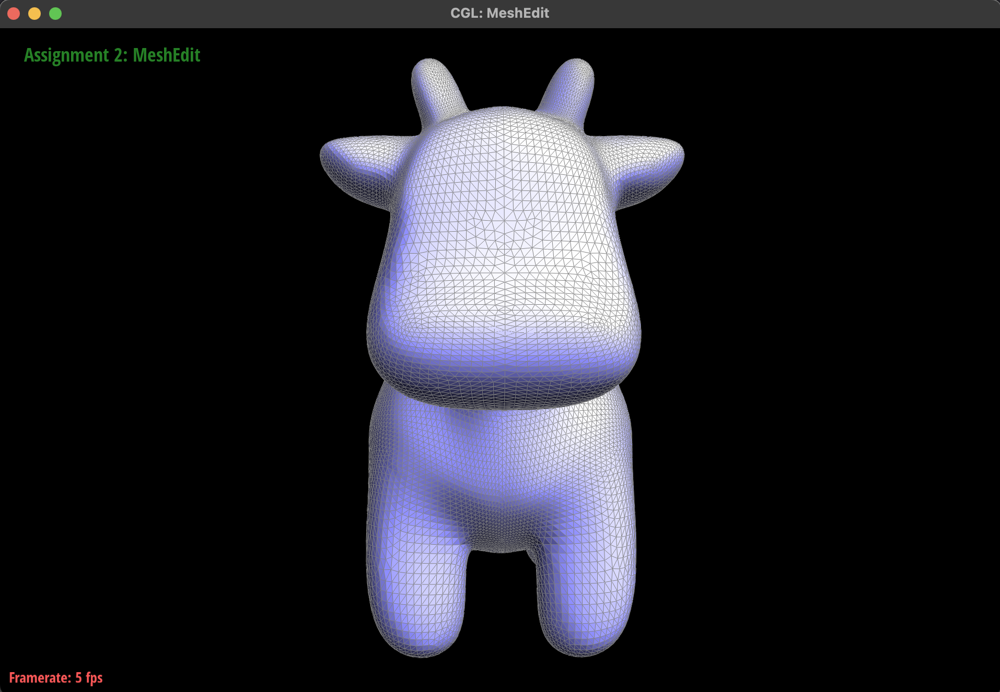
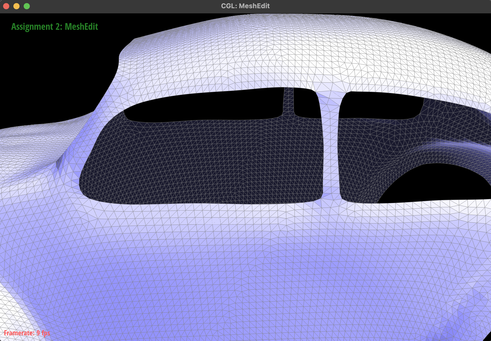

Overview
In this homework, we implement Bezier curves/surfaces and mesh operations. For Bezier curves, we implement de Casteljau's algorithm with a step-by-step method in 2D and dimension-separable approach in 3D. For triangle meshes, we implement area-weighted vertex normals, with the motivation that they enable better shading for smooth surfaces under the Phong model. We also implement several mesh operations: edge flip, edge split, loop subdivision (i.e. split edges and form new triangles from the existing incident ones), and $\sqrt 3$-subdivision (i.e. introduce a centroid face split operation as well as a new keybind for debugging, and flip edges). For each of these operations, we discuss our approach (the ways in which we optimized our implementation to change as few pointers as possible) and debugging strategies.
Section I: Bezier Curves and Surfaces
Part 1: Bezier Curves with 1D de Casteljau Subdivision
Briefly explain de Casteljau's algorithm and how you implemented it in order to evaluate Bezier curves.de Casteljau's algorithm works as follows. We begin with the control points of the Bézier curve (make a copy). Repeat the following process recursively: for each iteration, linearly interpolate between adjacent control points. That is, with some control points $\{p_i\}_{i=1}^n$, one iteration of the update will be $\{(1-t)p_i + tp_{i+1}\}_{i=1}^{n-1}$. In the code, this is implemented as `BezierCurve::evaluateStep`.
Eventually, we will have one point, which is the point corresponding to $t$. Treat this as a function of $t \in [0, 1]$ to obtain the Bezier curves.
Take a look at the provided .bzc files and create your own Bezier curve with 6 control points of your choosing. Use this Bezier curve for your screenshots below. Show screenshots of each step / level of the evaluation from the original control points down to the final evaluated point. Press E to step through. Toggle C to show the completed Bezier curve as well.
|
|

|
|
|
|
|
|
The final curve is as shown.
Show a screenshot of a slightly different Bezier curve by moving the original control points around and modifying the parameter \(t\) via mouse scrolling.

Part 2: Bezier Surfaces with Separable 1D de Casteljau
Briefly explain how de Casteljau algorithm extends to Bezier surfaces and how you implemented it in order to evaluate Bezier surfaces.Evaluating Bezier surfaces can be done in a separable manner. That is, run 1D de Casteljau to interpolate between adjacent points in the $x$ direction for each fixed $y$ value, giving control points. Then use 1D de Casteljau using these control points to interpolate in the $y$ direction.
In implementation, the approach is quite similar to the 1D case. We replaced Vector2D with Vector3D and used the two-step evaluation method described above.
Show a screenshot of bez/teapot.bez (not .dae) evaluated by your implementation.
Section II: Triangle Meshes and Half-Edge Data Structure
Part 3: Area-Weighted Vertex Normals
Briefly explain how you implemented the area-weighted vertex normals.For each triangle, we traversed all of the edges of adjacent polygons and computed the sum the cross products of each adjacent pair of edges. For a given polygon, calculating the sum of the cross products of each adjacent pair of edges would return a vector that is perpendicular to the plane of the polygon with magnitude equal to twice the area of the polygon. In this way, assuming each polygon is planar, calculating this sum across all adjacent polygons would give us an area-weighted sum, which would give us the area-weighted vertex normal once normalized.
Show screenshots of dae/teapot.dae (not .bez) comparing teapot shading with and without vertex normals. Use Q to toggle default flat shading and Phong shading.
|
|
|
Part 4: Edge Flip
Briefly explain how you implemented the edge flip operation and describe any interesting implementation / debugging tricks you have used.We drew out an edge flip on paper and identified which pointers needed to be moved. Since the amount of pointer movement in an edge flip is relatively small compared to the other operations, we decided to write an ad hoc algorithm to move pointers without needing to store or name any pointers. To do this, we made sure to keep the halfedge to halfedge operations for the end so we could correctly traverse to vertices, faces, and edges as needed. We ended up with a set of 7 paired operations, which needed minimal testing and debugging to ensure correctness.
Show screenshots of the teapot before and after some edge flips.
|
|

|
Write about your eventful debugging journey, if you have experienced one.
Minimal debugging was needed.
Part 5: Edge Split
Briefly explain how you implemented the edge split operation and describe any interesting implementation / debugging tricks you have used.Our implementation is shown in the figure. The input edge e0 has associated halfedges 1 and 2, which are on faces A and B, respectively. To preserve some elements of our original setup, we maintain that 1 and 2 are on A and B, but change most of the rest of this setup.
- Create new edges.
- Update halfedges' twin and next attributes.
- Update edges' halfedges.
- Update faces' halfedges and halfedges' faces.
- Update vertices.
Show screenshots of a mesh before and after some edge splits.
|
|
|
Show screenshots of a mesh before and after a combination of both edge splits and edge flips.
|
|
|
Write about your eventful debugging journey, if you have experienced one.
We didn't need to debug! Our first implementation was correct.
If you have implemented support for boundary edges, show screenshots of your implementation properly handling split operations on boundary edges.
|
|
|
Part 6: Loop Subdivision for Mesh Upsampling
Briefly explain how you implemented the loop subdivision and describe any interesting implementation / debugging tricks you have used.We follow the algorithm described in the spec:
- Update the newPosition of each vertex in the mesh as a weighted average of the current position and neighboring vertices' positions.
- Each edge will get split. Update the newPosition of each edge in the mesh, which is a weighted average of the positions of the vertices in the triangles containing that edge.
- Split each edge. We store the number of required edges to split on, so that we do not split the new edges we just created (which would result in an infinite loop).
- Flip every new edge that is between one new vertex and one old vertex.
- Update all vertex positions.
Take some notes, as well as some screenshots, of your observations on how meshes behave after loop subdivision. What happens to sharp corners and edges? Can you reduce this effect by pre-splitting some edges?
Sharp edges and corners get rounded out. This is no surprise because the loop subdivision weighting will pull these sharp components towards the center of the cube due to the weighted averaging. We have alleviated this effect by splitting each edge into 4.
Indeed, we can compare to the figures in the following question (where we have only split on the faces) and observe that the edges and overall cube shape are much more pronounced with sharp edge splits.
Load dae/cube.dae. Perform several iterations of loop subdivision on the cube. Notice that the cube becomes slightly asymmetric after repeated subdivisions. Can you pre-process the cube with edge flips and splits so that the cube subdivides symmetrically? Document these effects and explain why they occur. Also explain how your pre-processing helps alleviate the effects.The problem with the original mesh is that the edges across each face are not symmetric, causing the subdivision process to produce an asymmetric mesh. Pre-splitting the edges on each face resolves this:

We additionally implemented $\sqrt{3}-$subdivision, and implemented boundary support for both loop subdivision and $\sqrt{3}-$subdivision. $\sqrt{3}-$subdivision can be accessed with the 'p' keybind, and we added keybind support for face splitting with 's' if a face is selected.
We implemented $\sqrt{3}-$subdivision using the provided paper. This subdivision scheme relies on performing face splitting of triangles, which puts a new vertex at the mean of the triangle vertices and creates three new edges to connect them. Then, all pre-existing edges are flipped to create a roughly even triangular grid that is rotated 30 degrees from the original grid. Existing non-boundary vertices are weighted by \[v'=(1-\alpha_n)v+\alpha_n \frac{1}{n}\sum_{i=1}^n v_i\] where $v$ is the current position of the vertex, $v'$ is the new position of the vertex, $n$ is the valence of the vertex, and $v_1,\dots,v_n$ are the positions of the neighbors of this vertex. We define the constant $\alpha_n$ as \[\alpha_n=\frac{4-2\cos(\frac{2\pi}{n})}{9}.\] All new vertices can be left where they were, as an average of the positions of the vertices on the triangle they belong to.
Overall, we follow the following algorithm:
- Update the `newPosition` of each vertex in the mesh as a weighted average of the current position and neighboring vertices' positions.
- Split each face. We store the number of required faces to split, so that we do not split the new faces we just created (which would result in an infinite loop). Mark each new vertex as new.
- Flip every edge that is between two old vertices.
- Update all vertex positions.
Below, we show $\sqrt{3}-$subdivision twice to demonstrate the rotating nature of the subdivision, and we show the loop subdivision for comparison. In general, we can observe that in loop subdivision each original triangle is split into four after one iteration, and in $\sqrt{3}-$subdivision each original triangle is split into nine after two iterations.
|

|

|
|

|

|
For loop subdivision boundary support, we added a few edge conditions for boundary vertices. In our initial loop over our vertices, we first find the sum of adjacent boundary vertices for all existing boundary vertices. Then, for existing vertices we use the formula \[v'=\frac{1}{8}v_1+\frac{1}{8}v_2+\frac{3}{4}v\] where $v$ is the current position of the vertex, $v'$ is the new position of the vertex, and $v_1$ and $v_2$ are the positions of the neighbors of this vertex. For new vertices on the boundary, we simply average the positions of the vertices at the end of the edge. This helps boundary shapes to round out as subdivision iterations are performed, which can be observed in the provided figures.
For $\sqrt{3}-$subdivision support, we needed a slightly more significant modification to the algorithm. Note that in the current form of the algorithm, only faces are split, so any boundary edges and vertices remain unmodified and remain where they are. The behavior we observe in all other edges is roughly to split into three edges every two subdivision iterations (hence the $\sqrt{3}$ in the name), so to extend this to boundary edges we can trisect each boundary edge at every second subdivision iteration. We then apply the following weights/stencil: \begin{align*} v'_{3i-1}&=\frac{1}{27}(10v_{i-1}+16v_i+v_{i+1}) \\ v'_{3i}&=\frac{1}{27}(4v_{i-1}+19v_i+4v_{i+1}) \\ v'_{3i+1}&=\frac{1}{27}(v_{i-1}+16v_i+10v_{i+1}) \end{align*} where $v_i$ is the current vertex position, $v_{i-1}$ and $v_{i+1}$ are the positions of the neighbors of $v_i$ on the boundary, $v'_{3i}$ is the new position of $v_i$, and $v'_{3i-1}$ and $v'_{3i+1}$ are the positions of the new vertices directly adjacent to $v_i$.
Below, we can observe boundary subdivision for loop subdivision and $\sqrt{3}-$subdivision. We can observe that the boundary has additional vertices and is smoother after one loop subdivision and two $\sqrt{3}-$subdivisions, but is unmodified after one $\sqrt{3}$-subdivision.
|
|

|
|
|
|
Part 7 (Optional, Possible Extra Credit)
Save your best polygon mesh as partsevenmodel.dae in your docs folder and show us a screenshot of the mesh in your write-up.YOUR RESPONSE GOES HERE
Include a series of screenshots showing your original mesh and your mesh after one and two rounds of subdivision. If you have used custom shaders, include screenshots of your mesh with those shaders applied as well.
YOUR RESPONSE GOES HERE
Describe what you have done to enhance your mesh beyond the simple humanoid mesh described in the tutorial.
YOUR RESPONSE GOES HERE